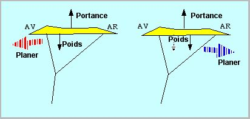
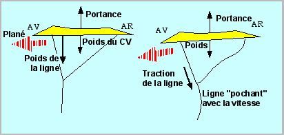
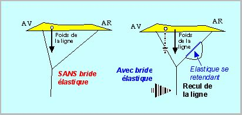
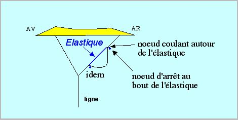

La bride élastique

Ce montage élastique ne concerne, est-il besoin de le préciser, que la bride arrière. Contrairement à ce que l'on pense en général, l'utilisation pour éviter les coups de vent trop forts n'est pas l'avantage le plus important. Le plus utile, pour moi, est en effet d'éviter les "passages par le haut" qui surviennent dans 2 cas :
• si votre cerf-volant a vraiment peu de traînée et passe effectivement tout seul au dessus de votre tête, une fois en haut de sa fenêtre. Ceci peut aussi être la suite logique d'une montée à la verticale dans un thermique ;
• si votre cerf-volant vole assez haut et que le vent s'arrête comme il a quelquefois une fâcheuse tendance à le faire surtout dès qu'on ne regarde pas.
Quel que soit le cas, un cerf-volant abandonné à lui-même peut avoir deux tendances :
• Tendance 1 : partir en plané vers l'avant et aller vers la verticale. La ligne se détend alors, et, pour reprendre la situation en main, il faut d'abord la remouliner comme un forcené. C'est ce qu'on préfère en général éviter. Toutefois, il peut être passionnant d'imiter les oiseaux et de spiraler dans les ascendances. Gare cependant à la sortie, car à coté de l'ascendance vient toujours la descendance ("la nature a horreur du vide") et il faudra rembobiner encore plus vite pour retrouver le contrôle. Ces manoeuvres impliquent évidemment que le CV soit tenu en main en permanence et non abandonné accroché à un poteau pendant que son maître est parti à l'apéritif offert généreusement par la municipalité.
• Tendance 2 : partir en plané vers l'arrière. Il retend alors de lui-même son fil et remontera si le vent remonte, ou tombera lentement sur le croupion dans le cas contraire, mais sans perte de contrôle, avec reprise immédiate dès qu'on tire sur le fil. Si sa forme ne le laisse pas se renverser au posé, il pourra même redémarrer tout seul si le zéphyr renaît (cas d'une arche).
De quoi dépend la tendance adoptée par votre appareil : simplement de la position relative du centre de poussée aérodynamique et du centre de gravité (ça n'est pas si simple, ce serait trop facile, car la position du centre de poussée varie selon l'écoulement, et les CV ont en général un moment cabreur). En gros, disons que si le poids est plutôt en avant, le CV plane vers l'avant, et s'il est plutôt arrière, le CV part vers l'arrière.

Évidemment, pour être dans le cas n° 2, on peut mettre un poids à la queue de l'engin. Cela semble un peu paradoxal vus les efforts consentis habituellement pour alléger la bête. Toutefois il ne faut pas écarter complètement cette solution a priori. En effet, l'adopter dans une mesure raisonnable permet d'avoir un cerf-volant plus fin (par exemple moins cambré ou avec moins de queue) et on rattrape sur la portance aérodynamique ce qu'on perd sur le poids global. Dans ce sens, il est recommandé lors de la conception d'un modèle de privilégier plutôt une armature dont le centre de gravité sera en arrière ou d'alléger les renforts avant et d'être généreux sur ceux de l'arrière.
Mais où intervient la bride élastique dans tout ça ?
Hé bien, quand le vent mollit, votre ligne devient verticale, et elle tire sur le cerf-volant verticalement là où elle est pendue. Cet effet est d'autant plus important que la ligne est grosse (toujours trop, je sais, vous ne voulez pas vous couper les doigts...) et que le CV est haut (la ligne est plus longue). Par petit temps, volez donc avec des lignes fines ! On peut d'ailleurs noter que, si le cerf-volant commence à partir vers l'avant, la ligne avec sa traînée "poche" encore plus vers l'arrière que la verticale, car elle a un poids, mais aussi une trainée. Ceci aggrave d'autant le phénomène : la traction de la ligne s'exerçant encore plus sur le nez, le piqué s'accentue, donc la vitesse augmente, donc la traction de la ligne sur le nez est plus forte, etc.

Si vous ne croyez pas à l'importance de cet effet, faites un essai avec un cerf-volant un peu tendance piqueur et vous pourrez constater l'écart entre une ligne fine et une ligne nettement trop grosse.
Et la bride élastique ? Si elle est bien réglée pour cette fin, son élastique est tendu en vol normal, mais quand le vent mollit et que la traction sur la ligne diminue, il tire le point de bride vers l'arrière. Le point d'application du poids de cette bride recule alors, ce qui améliore toujours la situation. Je ne dis pas que c'est le remède miracle, mais ça a un effet non négligeable, je l'ai expérimenté.

Pour l'application, il faut revenir à la distinction que je faisais au début :
• si on veut utiliser la bride élastique pour étaler les surventes, il faut utiliser un élastique costaud, qui ne s'étire pas en utilisation normale, mais seulement lors des rafales ;
• si par contre on veut éviter les planés vers l'avant, il faut un élastique long et fin, qui soit étiré en vol normal, et ne se contracte que si le vent faiblit au dessous des conditions pour un vol normal stable.
N'essayez donc pas de faire une bride élastique qui couvre les 2 cas. Ou alors, il faudrait 2 élastiques, un pour chaque effet, mais ça, je n'ai pas essayé et ça devient un peu usine à gaz.
Voilà. La réalisation est en général simple, à part le choix du diamètre de l'élastique. Il suffit, sur la bride arrière, de faire deux noeuds coulants entre lesquels sera pris l'élastique.

Il n'y a guère à changer le réglage, sinon de la longueur mangée par les noeuds. La bride doit donc avoir du mou ensuite entre ces points. Ce mou devra juste se rattraper en vol normal pour fonctionner comme je l'ai indiqué. Et quand le mou est rattrapé, c'est la bride qui doit être tendue et limiter le mouvement, et non l'élastique bandé à mort et qui ne ferait pas long feu dans ces conditions. Faites quelques essais pour la grosseur et la longueur de l'élastique, et pour le mou à donner à la bride, mais c'est assez intuitif si vous avez bien compris ce que j'ai essayé d'expliquer. Sinon, dites que c'est ma faute. Voilà, bon vol par petit temps, et si vous avez des commentaires ou des compléments je serai ravi de les lire.
Maxime.